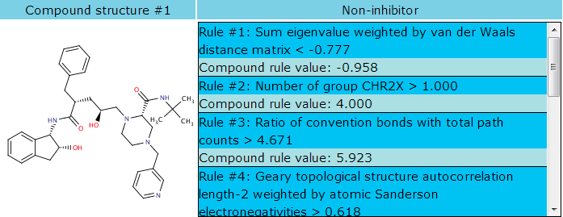
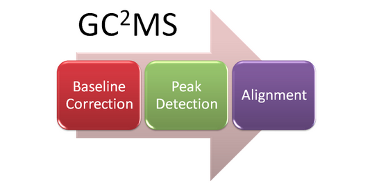
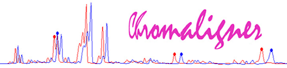
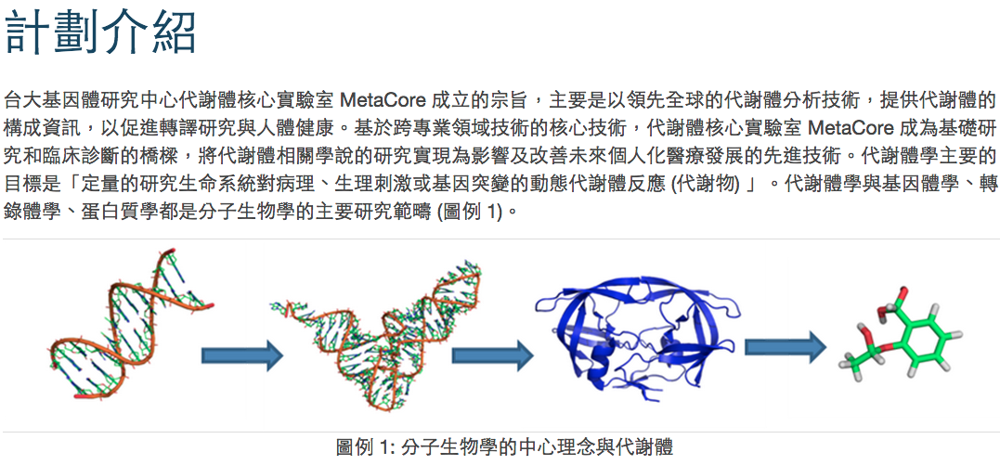

軟體服務
Virtual Rat web
提供 ADMET（吸收、分佈、代謝、分泌、毒性）的結果預測，同時也提供可能的原因以解釋此預測模型結果。Link >>
CypRules web
用以預測新陳代謝細胞色素 P450 (CYPs) 抑制作用，包含 CYP1A2、CYP2C19、CYP2C9、CYP2D6及CYP3A4。Link >>

GC2MS web
包括一切以 GCxGC/TOF-MS 為基礎的資料分析平台。Link >>


Chromaligner web
對色譜進行校準的工具。不同色析法（例如: 高效液相色譜法、毛細管電泳儀）所產生的色譜皆可使用。時移是一個在梯度沖提或毛細管電泳中常遇到的問題，而Chromaligner用一個限制的色譜校正方法去處理這個問題。Link >>
MetaCore portal
台灣大學代謝體核心實驗室的入口網站。Link >>
